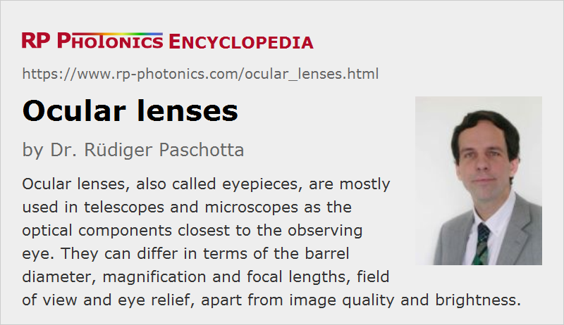

Ocular Lenses
Definition: lenses or lens systems as used in telescopes and microscopes, for example, close to the observing eye
Alternative terms: ocular, eyepieces
More general term: lenses
Opposite term: objective lenses
German: Okulare
Category: vision, displays and imaging
How to cite the article; suggest additional literature
Author: Dr. Rüdiger Paschotta
Some optical instruments such as telescopes, infrared viewers and microscopes contain certain groups of optical elements, mostly lenses, which are called objectives and ocular lenses. While an objective is on the side of the observed object, the ocular lens (also called ocular or eyepiece, sometimes loupe) is on the side of the observing eye. It may contain a single optical lens or some combination of lenses and is normally placed in a cylindrical housing (barrel).
Besides the eye lens, which does the actual imaging, an ocular can contain an additional field lens for expanding the field of view. If that field lens is placed in the intermediate image plane, it does not affect the image magnification. However, the field lens is sometimes slightly moved away from that location.
Note that with eye lens we mean the glass lens closest to the eye, not the lens of the human eye itself.
Fixed and Exchangeable Ocular Lenses
Professional optical instruments usually allow the easy exchange of oculars and the use of oculars with different parameters. One can often modify the magnification of an instrument that way, and at the same time other parameters such as the field of view and the image brightness can change. Instruments normally have a standardized kind of barrel (sleeve) for insertion of an ocular. There is also a mounting thread with which the eyepiece can be fixed after insertion.
The optical parameters of an ocular and not only the barrel diameter should fit to the optical instrument. It is sometimes possible to use oculars from different manufacturers with an instrument, but the performance may be more or less degraded if the optical parameters do not fully fit.
Binoculars, infrared viewers and other compact optical instruments often have rigidly attached ocular lenses, which cannot be easily exchanged.
Parameters of Ocular Lenses
Oculars are characterized with a couple of parameters, which are discussed in the following.
Barrel Diameter
Exchangeable oculars have a certain barrel diameter which must fit to that of the optical instrument.
The most frequently used barrel diameter for telescopes is 1.25 inches = 31.75 mm, but consumer devices may use smaller barrels of 0.965 inch = 24.5 mm, while there are also larger sizes such as 2 inch = 50.8 mm or even larger ones up to 4 inches for use in certain professional instruments. Large barrel diameters usually imply a higher price, but allow for a larger field of view for a given magnification.
For microscopes, other barrel diameters like 23.2 mm or 30 mm are common.
Magnification, Focal Length and Field of View
The magnification of an telescope or microscope can usually be understood as the product of the magnification factors of objective and ocular lens. The magnification of an eyepiece depends on its focal length. Generally, short focal lengths lead to higher magnification, but also to a smaller field of view and possibly stronger image distortions.
Exit Pupil and Eye Relief
The transverse limitations which an ocular imposes on the transmitted light are characterized with the diameter of the exit pupil. That diameter should approximately fit the diameter of the pupil of the observing eye:
- If the exit pupil were larger, not all exiting light could be utilized by the eye; one would lose image brightness.
- A smaller exit pupil of the optical system is also not desirable; it would not allow one to make use of the full angular resolution of the eye.
Note that the assumed pupil diameter is assumed to be significantly larger for an astronomical telescope than for a microscope, because the viewing conditions are usually relatively dark, leading to a wide open eye.
Further, the actual position of the exit pupil should be close to the position of the eye pupil, so that light which gets through the exit pupil can also enter the eye. The distance between the exit pupil and the physical end of the ocular is called the eye relief. Ideally, the eye relief should be at least about 5 mm, and possibly even 20 mm for observers wearing glasses. However, oculars with small focal length tend to have a smaller eye relief, e.g. only 2 or 3 mm, although there are design methods with which more can be achieved – possibly at the expense of other parameters. A particularly large eye relief is required for riflescopes, because the recoil would otherwise push the ocular into the eye.
Ocular Lens Designs
There is a wide range of optical designs of oculars. In the simplest case, there is only a biconvex lens or alternatively (for Galilean telescopes) a biconcave (negative) lens. Other designs contain two or more lenses; for example, the Huygens eyepiece and the Ramsden eyepiece contain two planar-convex lenses, namely a field lens and an eye lens. Other designs contain achromatic lenses for reducing chromatic aberrations. Further designs, which are optimized in various respects like a field of view and image distortions, are named after Georg Simon Plössl, Ernst Abbe and others.
There are complicated design trade-offs, and the best choice can substantially depend on the optical instrument, the operation conditions and the priorities concerning performance parameters. Cost and weight can be additional aspects to consider.
Suppliers
The RP Photonics Buyer's Guide contains 8 suppliers for ocular lenses.
Questions and Comments from Users
Here you can submit questions and comments. As far as they get accepted by the author, they will appear above this paragraph together with the author’s answer. The author will decide on acceptance based on certain criteria. Essentially, the issue must be of sufficiently broad interest.
Please do not enter personal data here; we would otherwise delete it soon. (See also our privacy declaration.) If you wish to receive personal feedback or consultancy from the author, please contact him e.g. via e-mail.
By submitting the information, you give your consent to the potential publication of your inputs on our website according to our rules. (If you later retract your consent, we will delete those inputs.) As your inputs are first reviewed by the author, they may be published with some delay.
See also: telescopes, microscopes, objectives, magnification, entrance and exit pupil, field lenses
and other articles in the category vision, displays and imaging
|  |
If you like this page, please share the link with your friends and colleagues, e.g. via social media:
These sharing buttons are implemented in a privacy-friendly way!